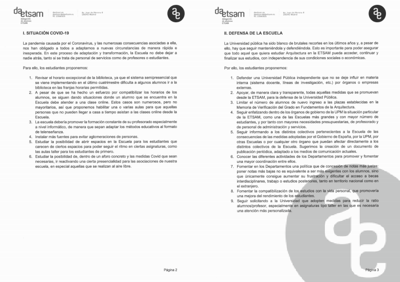
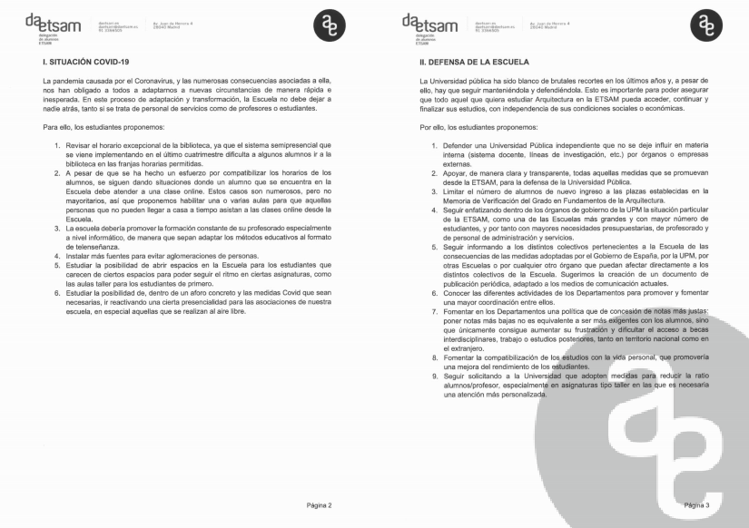
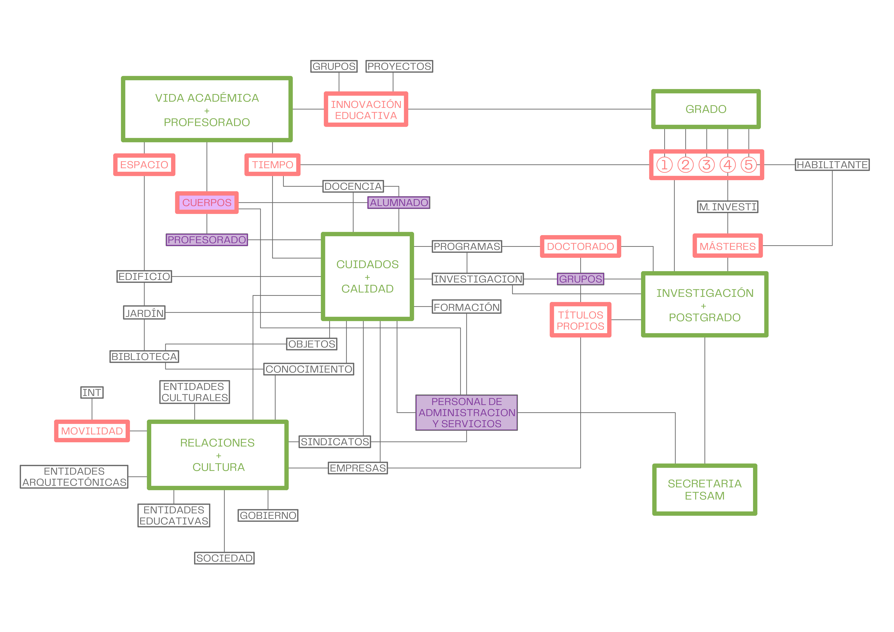
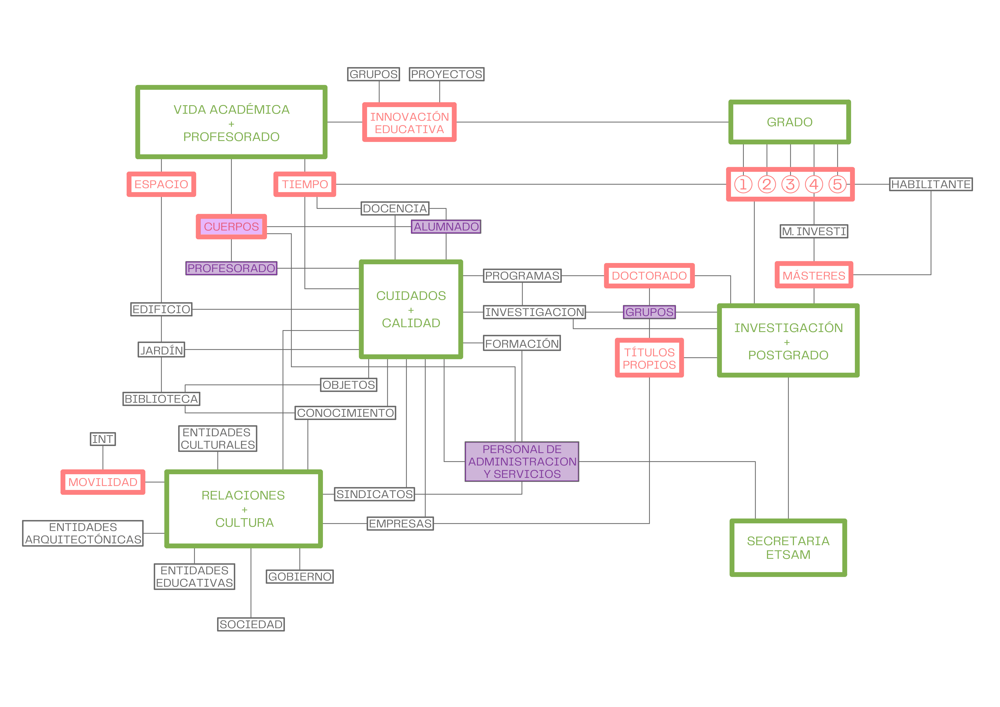

Il y a un autre monde mais il est dans celui-ci. (Paul Eluard)
Quienes me conocen saben que esta es una de las muchas frases que me gusta robar y manipular: hay otras escuelas, pero están en esta. Cuando yo estudiaba la carrera, ya había algunas realidades superpuestas en nuestra etsam y era lo mejor. En aquel entonces, por ejemplo, proyectos estaba organizado en solo tres cátedras que tenían un claro posicionamiento respecto a la arquitectura y al mundo en general y en los últimos dos años tenías que decidirte por urbanismo o edificación. Si te empeñabas, podías pasar por todas las cátedras, cursar con quien querías y hacer urbanismo y edificación, dentro de un sistema algo caótico pero resistente.
aumentar la cantidad y la diversidad de escuelas superpuestas
#ETSAMDETODXS
Ahora, casi cuarenta años después, el mundo ni se parece y sin embargo el edifico de la escuela se ha mantenido como si nada, solo ampliado por el pabellón nuevo construido encima del aparcamiento. Sobre una extraña planta baja con usos dispares y mutantes, en las tres plantas superiores los distintos departamentos se reparten el espacio y el tiempo de la etsam, fragmentando el aprendizaje de la arquitectura en las mismas áreas de conocimiento, que organizan las asignaturas del plan de estudios y dividen al profesorado dentro de un sistema resiliente y aparentemente incuestionable.
crear canales de comunicación interdepartamentales
#ETSAMCONECTADA
Si entendemos nuestra escuela como un dispositivo preparado para el aprendizaje y la investigación debemos asumir que todas las partes somos importantes para que la etsam funcione. El #dispositivoetsam no solo está formado por los cuerpos que lo habitamos, por los espacios, los objetos y las máquinas que lo ocupan y por los tiempos que nos organizan, sino también por la red de ideas, afectos y cuidados que nos unen tejiendo relaciones entre todos para que nos movamos en la misma dirección: conseguir la mejor etsam. Lo peor que puede ocurrir es que no nos movamos, que lo hagamos en distintas direcciones o que alguno de los elementos esté roto, especialmente si a los cuerpos se refiere. Lamentablemente estas sensaciones son las que sentimos ahora muchas y muchos de los que habitamos la escuela y no se lo podemos achacar al covid.
cuidar a la comunidad etsam
#CUIDALAETSAM
Como decía Dulce Chacón, acostumbrarse es otra forma de morir. Parece como si progresivamente las diversas escuelas presentes en la etsam se hubieran desinflado y nos estuvieran aplastando, dejándonos sin energía ni ganas para hacer nada que suponga un esfuerzo extra. Fuera de la escuela, el mundo se transforma a una velocidad que hace imposible controlar unos cambios que al menos deberíamos conocer, especialmente si afectan a nuestra propia práctica. No hablamos ya de cambios instrumentales, de la gran brecha digital que rompió la escuela hace años y que el confinamiento ha hecho más patente. Ni siquiera de la revolución de género y del 65% de alumnas que entran en la escuela desde hace muchos años, pero que siguen usando los mismos cuartos de baños de “señoritas”, insuficientes y viejos. Nos referimos a todo el conjunto de transformaciones que afectan al modo en el habitamos las ciudades, las casas, las pantallas, a la sostenibilidad, a la incertidumbre, al cambio climático, al mundo laboral, a tantas situaciones y nuevos términos que precisamente los estudiantes hicieron visible – y en especial los de la etsam – en el pabellón becoming de la bienal de Venecia del 2018.
conectar con los problemas del mundo
#ETSAMSITUADA
#ESTAMSENSIBLE
#madeinetsam fue un buen lema hace cuatro años que ahora ya no funciona. Llegar a la etsam hoy es entrar en un espacio que permanece colgado en el tiempo; es como ir a casa de la abuela: imperturbable, sin que los grandes conflictos le afecten en modo alguno y sin conciencia de su capacidad para influir en el mundo. Un espacio ocupado por un alumnado que se renueva cada año con unos trabajadores cada vez más mayores que superamos los 55 años de edad media. De hecho, parece que se ha instaurado el hábito de que la dirección de la escuela es la última etapa previa a la jubilación, un último escalón en la carrera académica. Claro, vaya risa que sea yo quien diga esto que el curso que viene cumpliré 60 años ( OMG ): retiraría ahora mismo mi candidatura si se hubiera presentado alguien de menos de medio siglo de vida. Pero no, la mayoría de los profesores y profesoras de esa franja de edad que han logrado entrar en la escuela, están asfixiados haciendo méritos para conseguir una estabilidad y dignidad laboral.
facilitar el acceso a los docentes jóvenes
#ETSAMDIVERSA
En algunos casos, ser profesores asociados se ha convertido erróneamente en el primer paso obligatorio para una carrera de funcionariado. En otros, en una contratación fraudulenta que no se corresponde con profesionales de prestigio. En cualquier caso, ser asociado o asociada, significa tener un sueldo precario, no poder pedir sexenios ni de investigación, ni de transferencia, ni de docencia, ni poder estar implicado activamente en la vida de la escuela si no es de modo altruista.
luchar contra la precariedad del personal etsam
#ETSAMDIGNA
Este tema incluye otros muchos aspectos, y algunos de ellos sería mejor ni mencionarlos por ahora, por si acabamos expedientados: el sistema nos empuja a profesionalizarnos como docentes, como funcionarios de la enseñanza, cerrando los ojos a los que supone estar en el mundo en cualquiera de sus escalas, profesional y personalmente.
Lamentablemente, la diversidad que podrían suponer la contrataciones, se acaba traduciendo en una especie de rango académico que de nuevo organiza la universidad como una especie de estructura militar, donde unos son doctores y otros no, unos obedecen y otrxs mandan, el grupo A de profesores permanentes pondera un 57% en las elecciones y el grupo B, llamado resto del profesorado, un 10%.
De hecho, la propia figura del director de la escuela, frente a ser comparable a la de un director de orquesta se asemeja a la de un teniente coronel.
El modo de trabajar colaborativo que ha sustituido a la disciplina autoritaria y a la autoría individual fuera de la escuela, no parece que sea contemplado aquí,
ni entre profesores ni con el resto de trabajadores y estudiantes. Y así nos va.
fomentar el trabajo colaborativo y disolver la disciplina autoritaria
#ETSAMENRED
Solamente en el colectivo del personal de administración de servicios se percibía un cierto trabajo en equipo facilitado por una espacialidad sin tabiques en muchos de los casos. Ahora ya no: no hay equipo porque no hay personal. La terrible reducción de PAS solo se ha visto parcialmente encubierta por el trabajo clandestino de los alumnos con becas de colaboración. Hay departamentos que no tienen a nadie desde hace meses. En doctorado tampoco. Claro que esto no es culpa del director; es simplemente el fotograma de la relación de sumisión que tenemos con el Rectorado, que parece que solamente se acuerdan de la ETSAM cuando estamos en campaña electoral.
redefinir la relación con la upm
#ETSAMEMPODERADA
He pertenecido al claustro siendo delegada de curso, delegada de escuela, representante de asociados, representante de contratados, hasta que en las últimas elecciones ya ni me presenté: ¿para qué?
poco a poco hemos ido siendo apartados hasta que asistir al claustro se convirtió en una tarde de ciencia ficción en ruso: no entendíamos lo que decían y la película ya estaba rodada.
Este año, por ejemplo, han incumplido el acuerdo de financiación a los másteres de la escuela por el ratio de alumnos en las aulas: ¡señores, que hay pandemia!
Si, este es otro temazo. El covid ha servido , además de para mejorar nuestro jardín, para ser la excusa perfecta para no hacer nada, o al menos hacer poco. De acuerdo,
ha habido una pandemia, hay que tomar medidas, ser cautos, cumplir protocolos, pero ¿es razonable que la escuela esté vacía y la llenemos para hacer exámenes?
Yo, particularmente, llevo dando clase presencial en la asignatura de primer curso desde septiembre; claro, con mucho cuidado. No podía imaginar que los estudiantes de Arquitectura no supieran lo que era la escuela; que pasaran de la selectividad a una pantalla de ordenador en sus casas durante seis horas diarias, si es que tienen internet. La pandemia ha servido a algunos para descubrir que en la capa digital, hay otra escuela más; aunque también para evidenciar que algunos no estamos preparados para ello y hasta compartir pantalla o cerrar el micrófono ha sido una historia.
virtualizar la etsam
#ETSAM.COM
De hecho, yo he coincidido muchas veces en los cursos de formación de ICE con otros compañeros. No me avergüenza decir que aprendí Premier y Photoshop en Caminos. También allí coincidí con otros trabajadores de la etsam, ninguno docente, en el curso de primeros auxilios. Cuanto menos, son datos curiosos.
formar a toda la etsam (docentes y pas también)
#ETSAMFORMA
Nos hemos acostumbrado a buscarnos la vida. Si haces los cursos, bien; y si no, también. El rollo este de hacer como si no pasase nada, o mejor dicho, el rollo de no hacer nada y que las cosas se solucionen por ellas mismas parece que está de moda. No darse cuenta que hay estudiantes que no tienen internet en su casa, que viven en Aranjuez y no pueden pasar de lo presencial a lo virtual como si nada, que sufren de columna, que viven en una habitación que comparten con tres hermanos... Todo el mundo cuchichea, todo el mundo discrepa, todo el mundo critica, hablamos mucho entre cuatro paredes, pero no nos cuidamos y como no tenemos ninguna capacidad de actuar y cambiar las cosas, acabamos escondiendo a nuestros alumnos en nuestros despachos, o hablando con Alfredo para que nos habilite un espacio. Nadie nos pregunta nada y tampoco nos enteramos de los que se decide en Junta de Escuela, en la comisión académica o en cualquier otro ámbito en el que se decida sobre nuestra cotidianidad en la ETSAM. También nos enteramos que hay alumnos que hacen prácticas curriculares, aunque no recuerdo que hayamos tenido este debate.
potenciar acciones participativas
#ETSAMPARTICIPATIVA
Cada uno va a lo suyo, a su despacho, a su asignatura y mientras no le toquen las narices, mejor no hacer ruido por si hay represalias. Cada día estamos más autistas de lo que ocurre al lado nuestro, en nuestra ciudad y nuestro planeta y claro no pintamos nada en los debates ni en las agendas donde se decide el futuro y el presente. Siempre ocupados y sin tiempo, excepto el de coincidencia en el ascensor, sobre todo cuando se paraba entre dos pisos en el pabellón nuevo.
relacionar la etsam con el resto del mundo
#ETSAMGLOBAL
En la casa de la abuela, cada día se repite el ritual del trabajo doméstico, mientras la vida pasa lentamente esperando una muerte más o menos apacible. Mientras, unos pasan por ahí para conseguir más tapers de comida, otros para saludar y quedar bien, algunos le echan una mano y los más jóvenes, le regalan un robot que le hace las tareas y le da conversación.
participar en las agendas sociales y políticas
#ETSAMCUENTA
Es triste ver este paisaje desolador sin la librería, sin becarios de prototipado, con las máquinas paradas , sin vida cultural , sin conversatorios ni debates sobre temas que nos interesan o no y sobre asuntos que deberían interesarnos a todos; llevar el escudito de ODS no es suficiente. ¿cuándo fue la última vez que participaste en un acto cultural en la escuela y te removió? No pudiste participar porque te pasaban lista y te ponían falta; porque es más interesante no saltarse la práctica 4 de la lección 3 que escuchar a los miembros de nuestra escuela que han colaborado en la redacción de la nueva ley de la Arquitectura, o a las que han estado trabajando sin parar en la Cañada Real. Ninguno de los grandes o pequeños temas parecen estar en el calendario de la escuela, porque no están contemplados en la memoria de verificación, en la guía de la asignatura o en el programa docente; no nos movemos todos en la misma dirección y menos si nos dividimos en artistas, técnicos, urbanistas, mediadores e investigadores entre otras cosas.
activar la etsam
#ETSAMVIVA
reactivar la vida cultural como corazón de la etsam
#ETSAMSIENTE
Da igual, unos y otros estamos ocupados todo el día trabajando para que nuestro sistema operativo no se pare. Cada vez más alumnos para menos trabajadores: ¡más madera! ¡más madera! Tanto en las aulas, como en los despachos, en los pasillos o en secretaría cada vez somos menos, en muchos casos invisibles y a menudo poco o nada valorados. Se jubiló Alicia, Elo, Carmen, Gloria y muchas más y algunos no saben ni quienes eran; no sabemos los nombres de quienes limpian nuestros espacios, abren nuestras aulas, matriculan a nuestros alumnos y sellan nuestros certificados. Desconocemos quiénes se han jubilado, quiénes han huido y quiénes se han muerto. Pero incluso entre los vivos, entre los que permanecemos, nos desconocemos. La falta de comunicación entre las distintas partes de la ETSAM no es solo una cuestión afectiva. La falta de información y de transparencia en la actividad académica, la descoordinación y desconocimiento entre los departamentos, sus profesores, sus asignaturas y sus investigaciones conduce a peleas de gallos impropias en una universidad pública.
Etsam existe porque hay alumnxs
#ETSAMDEALUMNXS
Y de hecho el tiempo está en medio de esta reflexión. El tiempo de estancia de los estudiantes en la etsam ha bajado de más de nueve años a poco más de seis, incluyendo el máster. Comparando las cifras de alumnado y los planes anteriores, parece que el máster habilitante se ha entendido como el sexto curso del Plan de Estudios anterior, pero con un precio que lo duplica. Desde luego esta no es una carrera para pobres porque no se puede trabajar a la vez que se estudia ya que se penaliza a quienes se matriculan por segunda o tercera vez.
hay un problema de tiempo
#ETSAMCONCILIA
Visto desde fuera y comparando con la vida universitaria de entonces, la escuela se parece ahora más a un colegio donde el jefe de estudios es la profesora de lengua (perdón, el profesor de lengua porque nunca ha habido en la etsam una jefa de estudios). Nuestro jefe de estudios, al que le mando un afectuoso saludo y le deseo una pronta recuperación, se dedica a gestionar espacios y tiempos. La gestión nos ocupa la vida. El debate académico, la discusión y la reflexión sobre el plan de estudios, las estrategias docentes o la innovación educativa no están en la lista de la compra de la abuela, porque en dicha lista no hay preguntas, solo productos y precios.
fijar espacios y tiempos intermedios –los miércoles al sol-
#ETSAMMIENTRAS
Los estudiantes tardan menos tiempo en hacer el grado y el habilitante, pero ¿qué es lo que hacen exactamente? ¿han cambiado las asignaturas? ¿los programas se han ido adecuando a las nuevas realidades? ¿los arquitectos de hace unos años son los mismos que los que ahora se necesitan? ¿cuáles son los nuevos caminos abiertos por los talleres experimentales y las intensificaciones? ¿a qué se dedican los alumnos cuando acaban? ¿se han introducido contenidos de otras disciplinas? ¿qué demanda hay en títulos propios? Posiblemente esté equivocada, pero me temo que no tenemos ni idea porque no hay nadie encargado de obtener los datos, analizarlos, generar encuentros y conversaciones, comparar otras universidades, plantear propuestas.
gestionar una base de datos y un análisis científico de la etsam
#ETSAMCONOCE
La ETSAM fue precisamente la primera escuela en instaurar el cambio radical de hacer desaparecer los exámenes de septiembre y comenzar el curso en dicho mes, usando el mes de enero para exámenes y viajes. Este cambio significó entre otras cosas dar a agosto un significado distinto y también al mes de enero, así como dividir el año en dos semestres. Quizás fue dramático al principio; de hecho creo recordar que ni siquiera la UPM lo veía claro, pero entonces no éramos tan vulnerables. Empezó a funcionar y parecía que todo iba bien. Las asignaturas de taller encontraban acomodo en una evaluación continua y se respetaban los plazos de las asignaturas de examen y las de taller. Diez años después de que Bolonia se introdujera en la escuela, el caos reina en cada curso; cada asignatura pone exámenes y entregas cuando puede y quiere y los alumnos ya no dicen nada tampoco, pero van al psicólogo. Parece ser que el psicólogo es el nuevo espacio en el que coincidimos profesores, investigadores y personal de administración: psicólogos y fisioterapeutas.
crear una subdirección de cuidados de la etsam
#ETSAMTECUIDA
Lamento este panorama que dibujo: seguramente habrán pasado muchas otras cosas maravillosas, pero dejo que las diga mi compañero Manuel Blanco. Si sintiera que todo va bien, no presentaría mi candidatura a directora de la escuela. Mucha gente cree que lo hago por una cuestión de género y se equivocan; si fuera hombre o trans, también me habría presentado.
Hay dos cosas evidentes: soy mujer y soy mayor. Lo primero es evitable pero me siento bien en mi cuerpo y me facilita elaborar paisajes distintos a los que estamos acostumbrados; lo segundo, es peor y desde luego no tiene ningún mérito: te dejas llevar de una forma más o menos saludable y envejeces.
¡Claro que me gustaría presentarme con 40 años y poder plantear propuestas más frescas y atrevidas!
Hay un tercer dato, también evitable, que ha sido parte del rumoreo típico pre_electoral en los pasillos de la escuela: soy la mujer de Cánovas, director del Departamento de Proyectos. No sé si el problema es Cánovas, el matrimonio o la unión de Ideación y Proyectos que parece que queremos convertir la escuela en un taller. Nunca antes había visto que la vida sexual de los candidatos fuera importante, aunque claro también con Hillary Clinton fue esa la excusa. En mi caso que no se preocupen; si tenemos que divorciarnos, lo pagamos nosotros. Respecto a lo de convertir la escuela en un taller….
convertir la etsam en un taller de aprendizaje
#ETSAMTALLER
Lo importante no soy yo; desde luego quien no me va a votar, no es porque mi currículum le plantee alguna duda. Creo que la dirección de la escuela no es una persona, sino un equipo capaz de activar estrategias de participación y de colaboración donde todos nos sintamos representados y diseñar mecanismos de comunicación y relación con el resto de entidades de dentro y fuera de la escuela.
renovar la estructura de dirección
Hacia dentro y hacia fuera simultáneamente. No mirando nuestro ombligo por muy geométrico que sea, sino cuidando cada una de los entes de la etsam y a la vez, escuchando el parloteo de fuera, mirando con atención, no desde encima sino al lado. Y también conversando en el tono que sea necesario con la UPM, con Aneca, con las agencia evaluadoras de la Comunidad o quien quiera que sea que nos facilita o nos impide nuestra vida académica de un modo digno y saludable. Su dinero es nuestro, de nuestros alumnos; sus evaluadores somos nosotros: el poder no está fuera, nosotros lo alimentamos; incluso mi abuela, con sus impuestos.
reestablecer el diálogo con los agentes fuera de la universidad
#ETSAMDIALOGA
Voy terminando. Releyendo ahora veo que faltan muchas cosas: TFGs, becas, investigación, concursos de remodelación de espacios de la etsam, talleres experimentales, sofás en los pasillos, una subdirección solo de grado, una posible guardería UPM, la presencialidad de la dirección, actualización de la página web, recuperación del huerto, dobles grados, la escuela de tarde, de verano, etc;
quizás es que no hay un solo tema que no nos afecte cuando el deseo es que la ETSAM funcione.
impulsar una escuela viva 24/7
#ETSAM24/7
Me gustaría añadir que todos aquellos que estén esperando un espectáculo de sangre entre Manuel Blanco y yo, pueden apagar zoom y conectarse a Netflix.
Mi objetivo no es ser directora de la etsam, sino construir en equipo otra ETSAM, donde estén activadas todas las escuelas que ahora mismo habitamos, con resonancia en el mundo por lo que hacemos y no por lo que decimos,
aunque ambas cosas estaría bien que coincidieran.
La casa de mi abuela ya no existe porque las dos están muertas. Una murió en una residencia y en casa de la otra, ahora se ubica un centro de meditación.
Los tiempos cambian
y ahora soy yo quien cuido de mis padres. En cualquier caso, tampoco la escuela es afortunadamente la casa de mi abuela, aunque algunos espacios lo parezcan.
recuperar la conciencia de universidad pública
#ETSAMPÚBLICA
La escuela pertenece a una Universidad Pública independiente, aunque pagada por toda la ciudadanía, que espera de nosotros, no solo que administremos bien sus dineros, sino que en ella se formen sus hijas e hijos como los mejores profesionales que la sociedad y el mundo demandan para construir un presente digno y sostenible. Todo lo demás, va después.
Este discurso no tiene lema, ni quiere tenerlo; tampoco presenta ideales ni lanza dardos contra nadie.
atmosferizar la etsam
#ETSAMSWEETHOME
No terminemos de mal rollo; el optimismo y el humor son fundamentales y no quitan seriedad al proceso electoral: el jueves 25 habrá terminado este asunto, divertido y estimulante, de las elecciones y nos podremos poner a hacer torrijas, pase lo que pase; como decía mi amigo Seguí: si sale con barba San Antón, y si no, la Purísima Concepción.


 2013, una experiencia innovadora y una aproximación disruptiva a los cursos online.jpg)


 

 
